6 長期記憶過程
本章では, 前章までで学んだARIMA(\(p,d,q\))モデルにおいて, 定常になるまでの差分の回数を表す\(d\)を, 非負の整数\(d\)から小数へと拡張したモデルである 自己回帰非整数平均過程 (Autoregressive Fractionally Integrated Moving Average) モデル, ARFIMA(\(p,d,q\)) を扱う.
差分の回数\(d\)を\(-0.5<d<0.5\)の範囲内の小数に拡張することで, ARFIMA(\(p,d,q\))モデルは, 定常過程でありながら, 長期記憶性 (long memory) (または, 長期依存性 (long-range dependence)) を有しており, 時系列解析分野において重要な (離散時間) 確率過程のクラスである.
\[ \phi(B)(1-B)^d X_t = \theta(B) Z_t \tag{2}, \quad -0.5<d<0.5\] ただし, 前章までと同様に,
- Backward shift operator \(B\)
- AR多項式 \(\phi(z)=1 - \phi_1 z - \cdots - \phi_p z^p\)
- MA多項式 \(\theta(z)=1 + \theta_1 z + \cdots + \theta_q z^q\)
本章ではまた, 長期記憶性を持つ, 連続時間の確率過程のクラス として重要な非整数ブラウン運動 fBM (fractional Brownian motion) についても簡単に触れる.
ハースト指数\(H\)は, 時系列データの長期記憶性を示す 指標の一つであり, 理論的には, fBMの増分過程 (非整数ガウスノイズ, fGN) に対する長期記憶性を表現する パラメータとして導入される.
具体的には, \(H\)の大きさにより,
- \(1/2 < H < 1\): 増分間に長期記憶性
- → fBMは持続的な (persistent) サンプルパス
- \(0 \le H < 1/2\): 増分間に短期記憶性
- → fBMは反持続的な (anti-persistent) サンプルパス
- \(H = 1/2\): 増分間は無相関 (独立)
- → fBMは通常のブラウン運動. 過去のサンプルパスと未来のサンプルパスは独立 となる.
この\(H\)と\(d\)の間には, \(H = d + 1/2\)なる関係が成立する.
本章では, Rを使用した, 所与の時系列データに対する\(H\)の推定方法についても紹介する.
6.1 長期記憶過程のシミュレーション
まず, Rパッケージを用い, 長期記憶性を持つ確率過程のサンプルパスを生成し, 視覚的に特徴を捉えてみよう.
パッケージfracdiffの利用
ARFIMA(\(p,d,q\))過程のシミュレーション
- サンプルパス生成(1): p = 2, d = 0.49, q = 0
- 簡単のため, MA項入れず
tlen <- 300
seedv <- 100; set.seed(seedv)
library(fracdiff)
fds_sim <- fracdiff.sim(tlen, ar = c(0.7, -0.2), d = 0.49) # -0.5<=d<=0.5
x <- fds_sim$series # 長期記憶系列
plot(x, type = "l")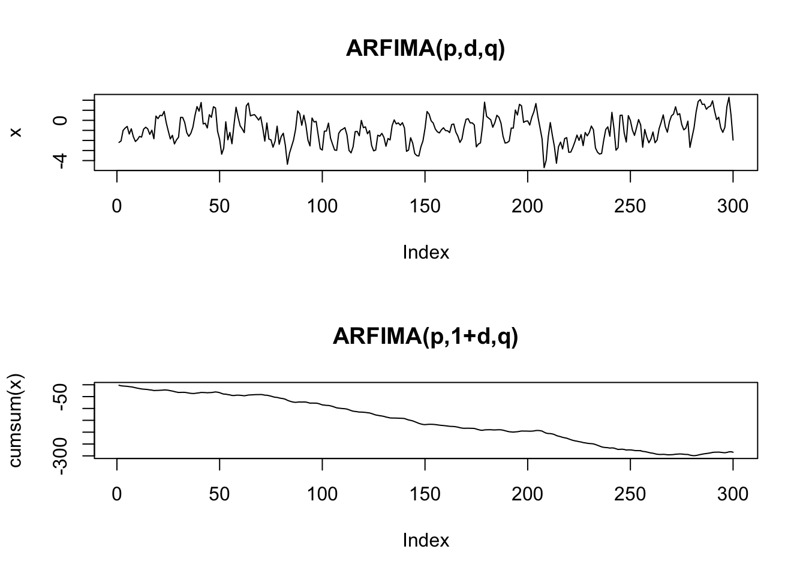
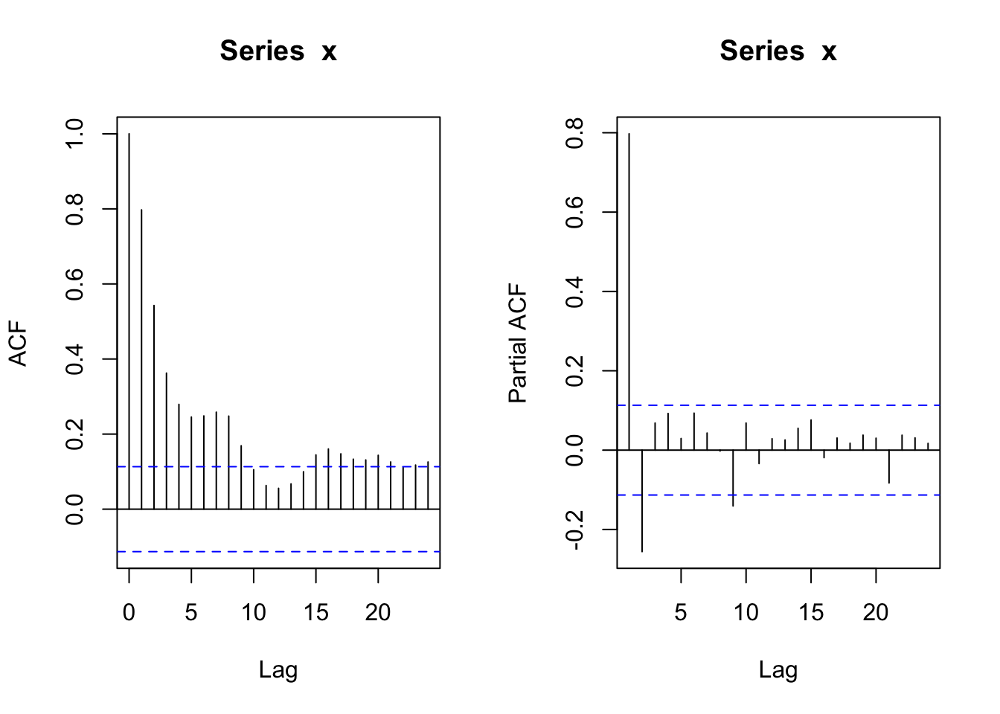
- サンプルパス生成(2): p = 2, d = 0.1, q = 0
set.seed(seedv)
fds_sim <- fracdiff.sim(tlen, ar = c(0.7, -0.2), d = 0.1)
x <- fds_sim$series # 長期記憶系列
plot(x, type = "l")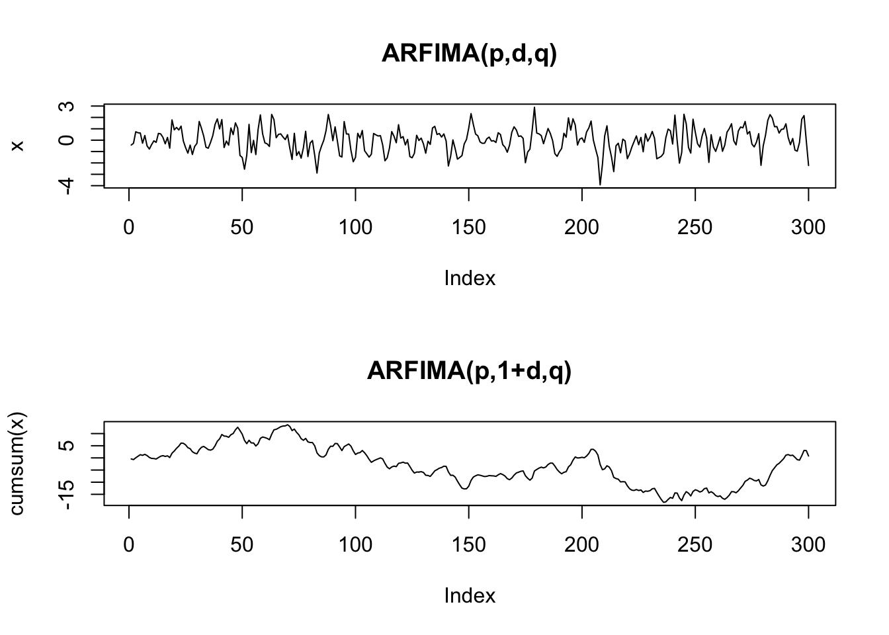
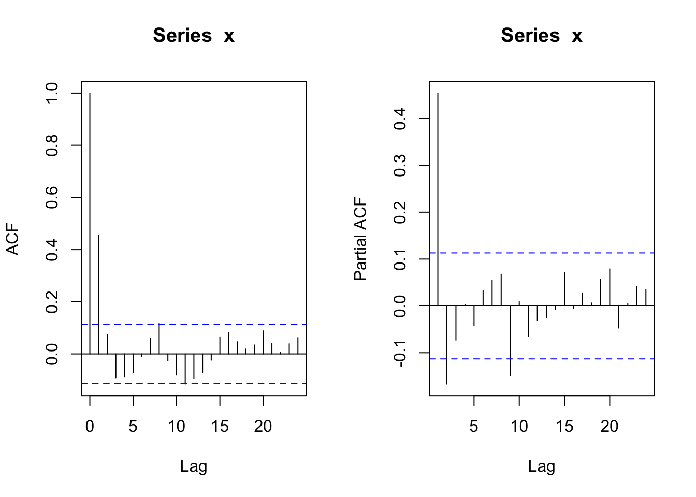
- サンプルパス生成(3): p = 2, d = -0.49, q = 0
set.seed(seedv)
fds_sim <- fracdiff.sim(tlen, ar = c(0.7, -0.2), d = -0.49)
x <- fds_sim$series # 長期記憶系列
plot(x, type = "l")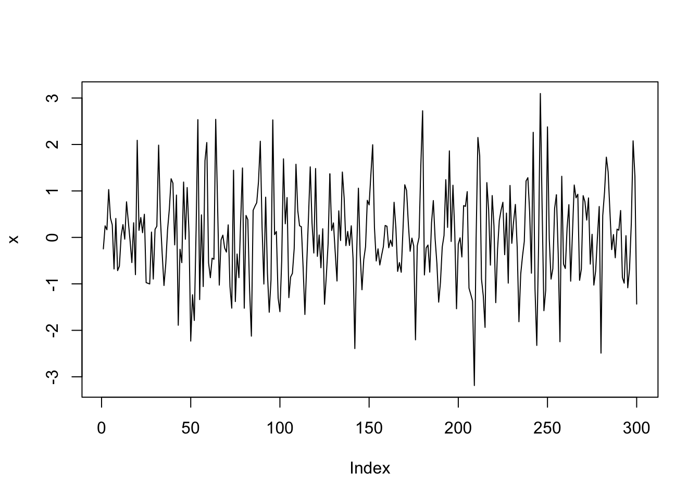
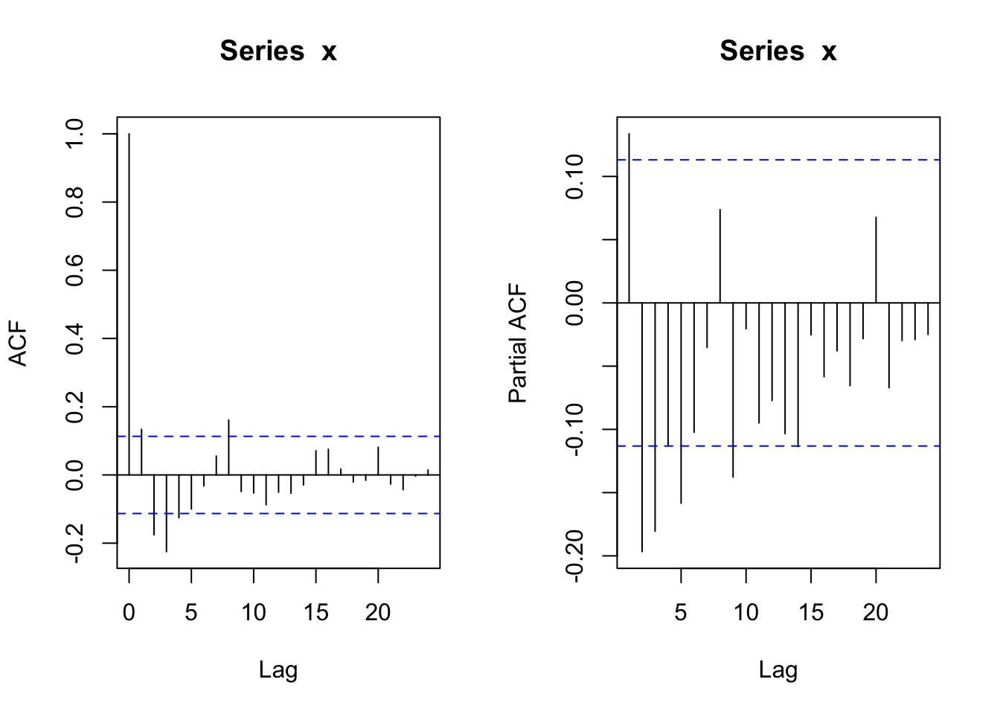
パッケージlongmemoの利用
ARFIMA, 非整数ガウス (fractional Gaussian) 過程の自己共分散関数
- ckARMA0(n, H):
ARFIMA(0,d,0) 過程の自己共分散関数の理論計算 (大きなkでは近似) (d = H - 1/2).# install.packages("longmemo")
library(longmemo)
seedv <- 1
tlen <- 100; Hval <- 0.9
plot(ckARMA0(tlen, H = Hval), type = "h")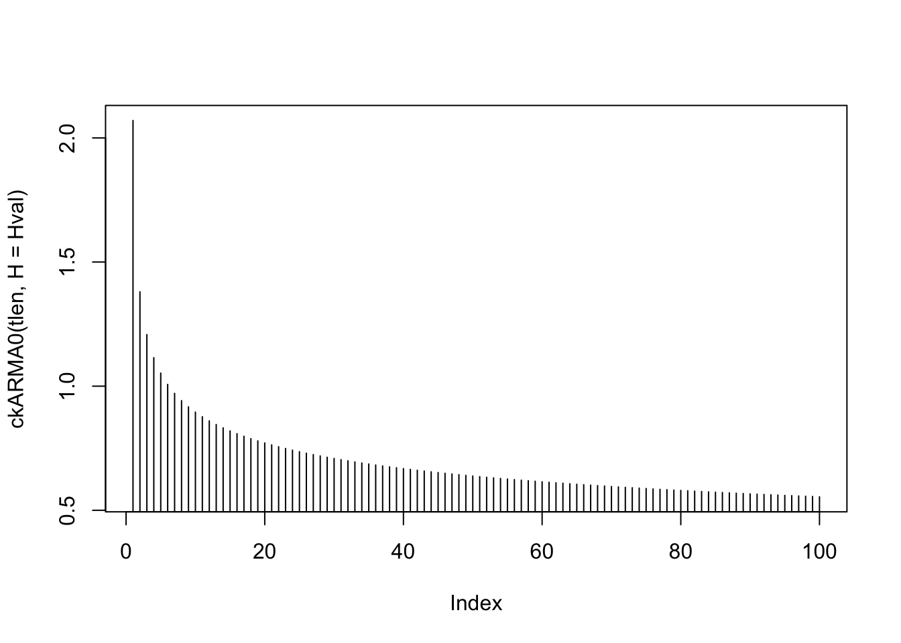
# H > 0.5の時のみ
plot(x = 0:(tlen - 1), ckARMA0(tlen, H = Hval),
type = "h", log = "xy",
main = paste0("Log-Log ACF for ARFIMA(0,d,0)\nH = ", Hval))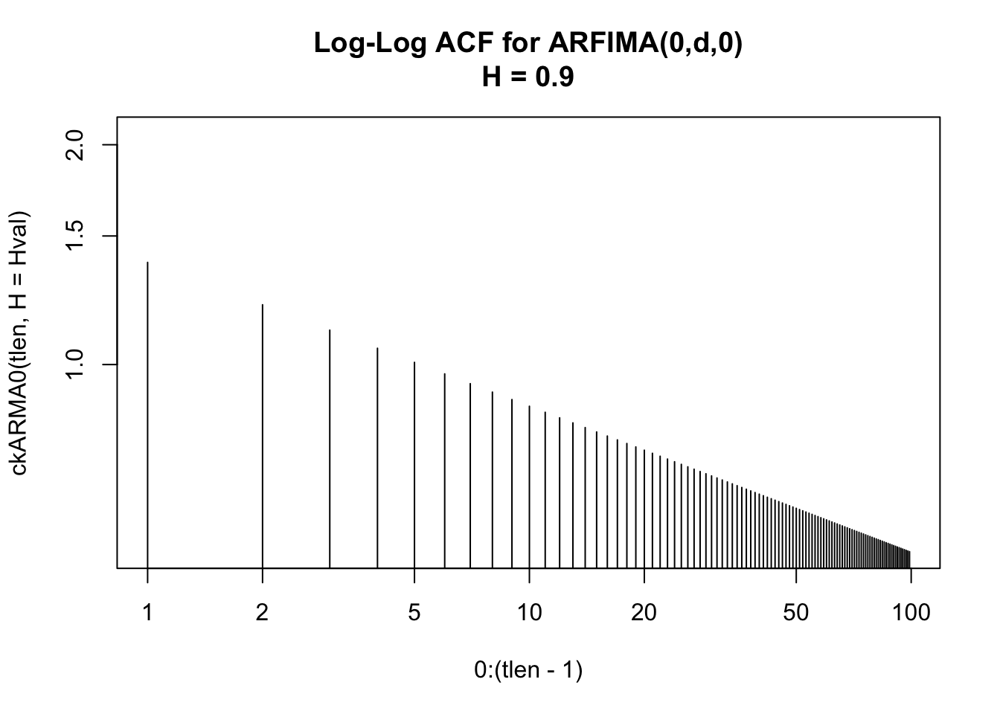
- ckFGN0(n, H):
非整数ガウス過程の自己共分散関数の理論計算# ckFGN0(n, H)
# Compute the Autocovariances of a fractional Gaussian process
plot(ckFGN0(tlen, H = Hval), type = "h")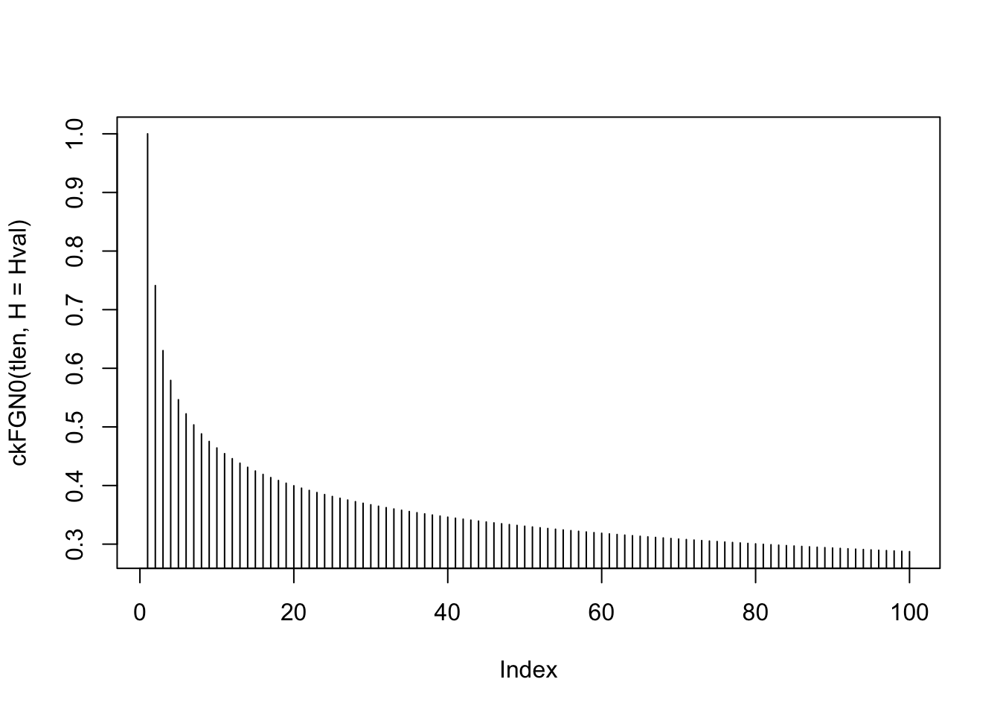
# (H > 0.5の時のみ)
plot(x = 0:(tlen-1), ckFGN0(tlen, H = Hval),
type = "h", log = "xy",
main = paste0("Log-Log ACF for frac. Gauss. Noise\nH = ", Hval))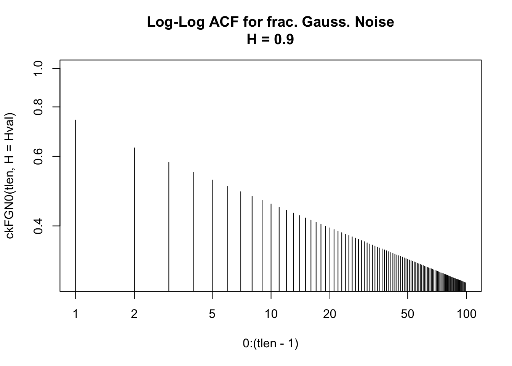
ARFIMA, 非整数ガウス (fractional Gaussian) 過程のシミュレーション
シミュレーションを行う関数として, ARFIMA(\(0,d,0\))にはsimARMA0()が, 非整数ガウス過程にはsimFGN0が用意されている.
seedv <- 1
set.seed(seedv)
x1 <- simFGN0(tlen, H = Hval) # 非整数ガウス過程
x2 <- simARMA0(tlen, H = Hval) # ARFIMA(0,d,0)
ts.plot(ts.union(x1, x2), col = 1:2, lty = 1:2,
main = paste0("frac. Gauss. Noise vs ARFIMA(0,d,0): H = ", Hval))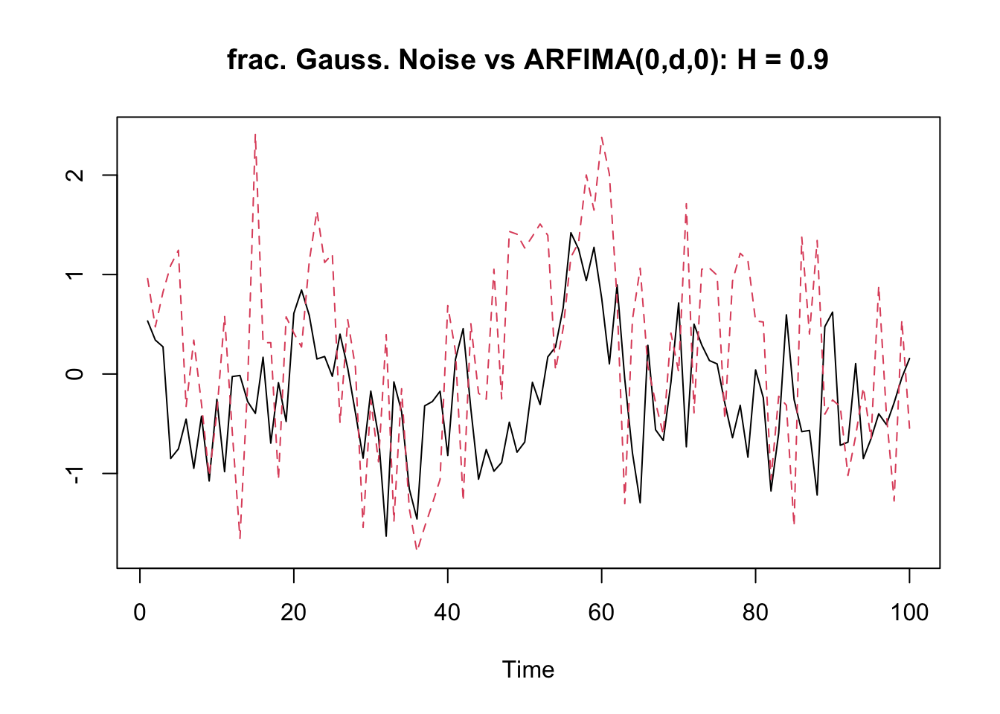
一般のARFIMA(\(p,d,q\)) (\(-1/2<d<1/2\)) のシミュレーションには, 以下のように関数arima.sim()を利用することができる (AR/MAパラメータは数値ベクトルで指定する).
# ARFIMA(2, 0.3, 1)の実行例
# AR係数: phi_1 = 0.9, phi_2 = -0.5
# MA係数: theta_1 = -0.2
phi <- c(0.9, -0.5)
theta <- -0.2
d <- 0.3
x3 <- arima.sim(tlen, model = list(ar = phi, ma = theta),
innov= simARMA0(tlen, H = d + 1/2), n.start = length(phi) + length(theta))
plot(x3)非整数ブラウン運動 (fBM) は, 非整数ガウス過程 (fGN) を増分過程とする確率過程であることから, fGNのサンプルパスを 累積することで, fBMのサンプルパスを得ることができる.
fBM_path <- function(tlen = 100, H = 0.5, sd_val = 1) {
set.seed(sd_val)
cumsum(simFGN0(tlen, H))
}
#
plot(fBM_path(tlen, Hval, seedv), type = "l")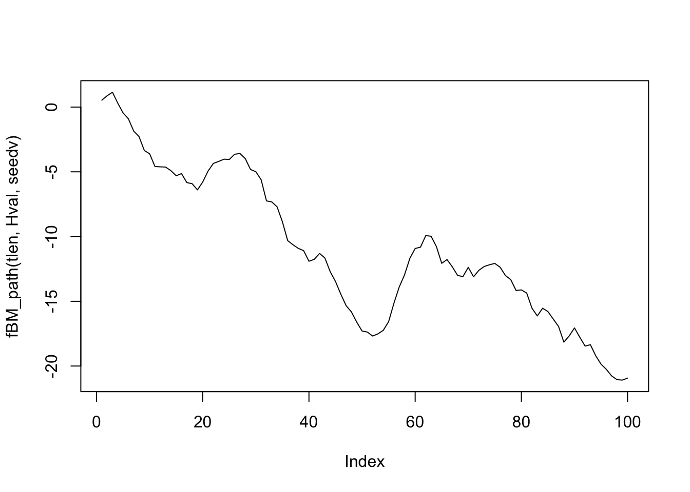
Hurst指数を3通り (\(0.1, 0.5, 0.8\)) に変えてサンプルパスを生成し, 比較する.
# 異なるHの値でのサンプルパスの比較
hvals <- c(0.5, 0.1, 0.8)
fBM1 <- fBM_path(tlen, hvals[1], seedv)
fBM2 <- fBM_path(tlen, hvals[2], seedv)
fBM3 <- fBM_path(tlen, hvals[3], seedv)
ts.plot(cbind(fBM1, fBM2, fBM3), col = c("#111111", "darkgrey", "lightgrey"), lty = 1, lwd = c(1, 3, 3),
main = paste0("frac. Brownian Motions\nH = ", paste(hvals, collapse = ",")))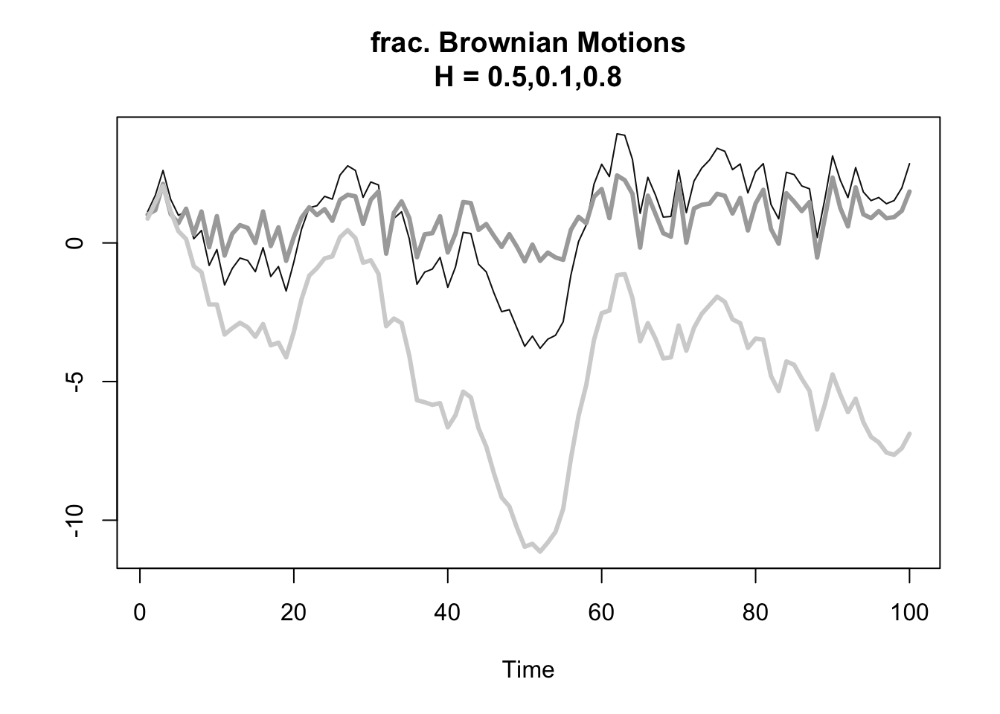
次に, Hurst指数の推定や, ARFIMAモデルの推定を シミュレーションデータを用いて行う.
6.2 Hurst指数の推定
パッケージpracmaの利用
- hurstexp(): R/S分析によるHurst指数推定 (複数の方法を同時実行)
- 出力:
- Hs - simplified R over S approach
- Hrs - corrected R over S Hurst exponent
- He - empirical Hurst exponent
- Hal - corrected empirical Hurst exponent
- Ht - theoretical Hurst exponentlibrary(pracma)
data(brown72)
x72 <- brown72 # H = 0.72
xgn <- rnorm(1024) # H = 0.50
xlm <- numeric(1024); xlm[1] <- 0.1 # H = 0.43
for (i in 2:1024) {
xlm[i] <- 4 * xlm[i - 1] * (1 - xlm[i - 1])
}
plot(x72, type = "l")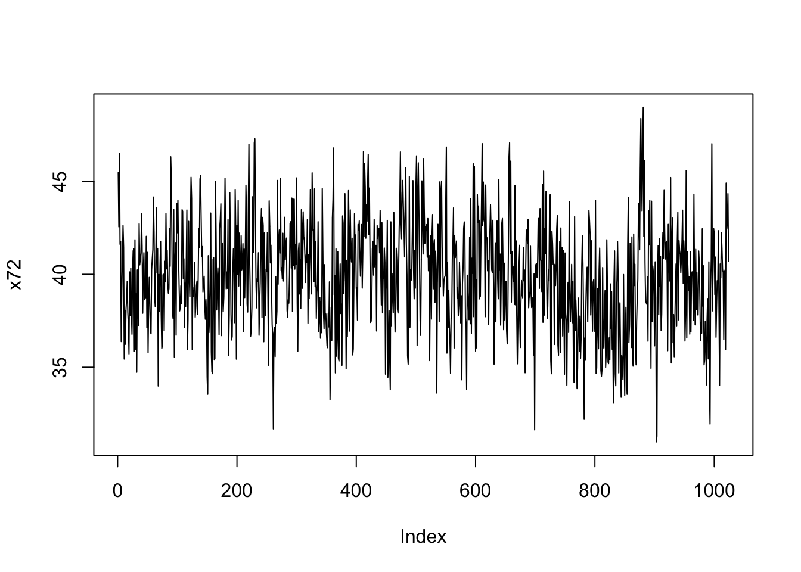
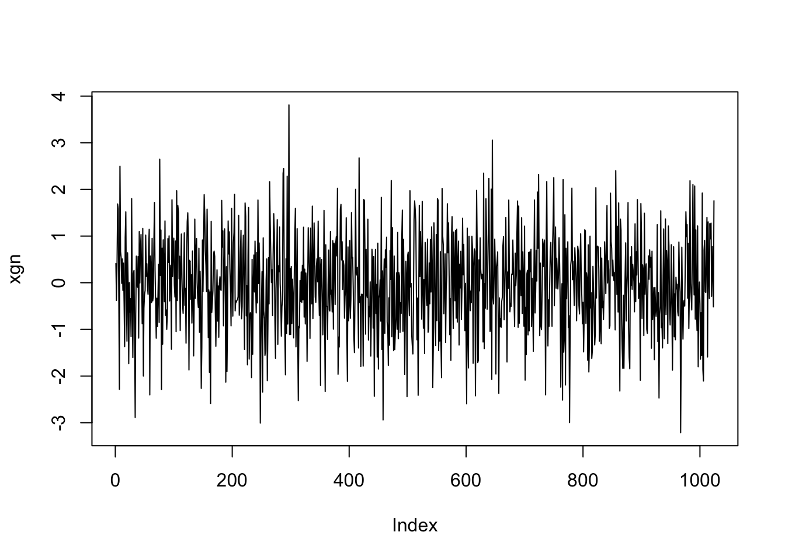
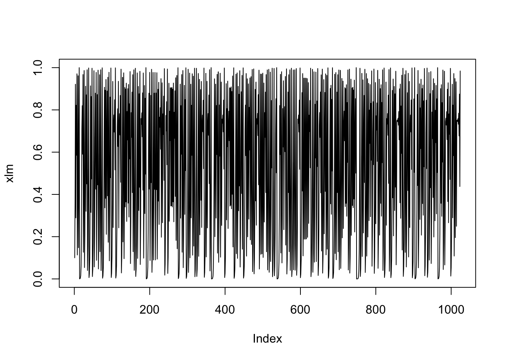
hurstexp(brown72) # d: smallest box size (default = 50)
#> Simple R/S Hurst estimation: 0.6628842
#> Corrected R over S Hurst exponent: 0.7378703
#> Empirical Hurst exponent: 0.6920439
#> Corrected empirical Hurst exponent: 0.6577233
#> Theoretical Hurst exponent: 0.5404756
hurstexp(xgn)
#> Simple R/S Hurst estimation: 0.4784489
#> Corrected R over S Hurst exponent: 0.4898617
#> Empirical Hurst exponent: 0.5041802
#> Corrected empirical Hurst exponent: 0.4636032
#> Theoretical Hurst exponent: 0.5404756
hurstexp(xlm)
#> Simple R/S Hurst estimation: 0.4762169
#> Corrected R over S Hurst exponent: 0.4722421
#> Empirical Hurst exponent: 0.4872281
#> Corrected empirical Hurst exponent: 0.4460807
#> Theoretical Hurst exponent: 0.54047566.3 ARFIMAモデルの推定
パッケージfracdiffの利用
真の確率過程がARFIMA(\(2,d,0\)) (\(d=-0.49\)) にも拘らず,
誤ってARモデルを選択し, ar()により推定した場合.
# library(fracdiff)
set.seed(seedv)
fds_sim <- fracdiff.sim(tlen, ar = c(0.7, -0.2), d = -0.49)
x <- fds_sim$series # 長期記憶系列
#
(ar_fit <- ar(x, method = "mle")) # 最尤法
#>
#> Call:
#> ar(x = x, method = "mle")
#>
#> Coefficients:
#> 1 2 3 4 5 6
#> 0.2060 -0.2321 -0.2082 -0.1717 -0.1534 -0.1875
#>
#> Order selected 6 sigma^2 estimated as 0.7814- → 大きい\(p\)を選択
パッケージ**fracdiff*内の関数fracdiff()により, AR係数, MA係数, 階差次数\(d\)を最尤推定する (以下, \(p=2\)を正しくしていたと仮定).
# nar, nma # AR, MAパラメーター数
(fds_fit <- fracdiff(x, nar = 2))
#>
#> Call:
#> fracdiff(x = x, nar = 2)
#>
#> Coefficients:
#> d ar1 ar2
#> 4.583013e-05 3.478729e-01 -2.143891e-01
#> sigma[eps] = 0.9577181
#> a list with components:
#> [1] "log.likelihood" "n" "msg" "d"
#> [5] "ar" "ma" "covariance.dpq" "fnormMin"
#> [9] "sigma" "stderror.dpq" "correlation.dpq" "h"
#> [13] "d.tol" "M" "hessian.dpq" "length.w"
#> [17] "residuals" "fitted" "call"- → 通常は\(p,q\)は未知 → 引数nar, nmaは複数の候補を試すべき
パッケージnsarfimaの利用
パッケージnsarfima内の関数mle.arfima()により, AR係数, MA係数, 階差次数\(d\)を最尤推定する.
library(nsarfima)
# p, q # AR, MAパラメーター数
(arfima_fit <- mle.arfima(x, p = 2))
#> $pars
#> mu sig2 d ar.1 ar.2
#> -1.267263e-02 9.022758e-01 5.522776e-08 3.414323e-01 -2.625068e-01
#>
#> $std.errs
#> mu sig2 d ar.1 ar.2
#> 0.1016556 0.1395288 0.1733823 0.2163811 0.1612114
#>
#> $cov.mat
#> sig2 d ar.1 ar.2
#> sig2 0.019468294 0.00740705 -0.01170439 -0.004266261
#> d 0.007407050 0.03006142 -0.03229578 -0.021628130
#> ar.1 -0.011704389 -0.03229578 0.04682076 0.024479505
#> ar.2 -0.004266261 -0.02162813 0.02447951 0.025989126
#>
#> $fit.obj
#> $fit.obj$par
#> d ar.1 ar.2
#> 5.522776e-08 3.414323e-01 -2.625068e-01
#>
#> $fit.obj$value
#> [1] 89.3253
#>
#> $fit.obj$counts
#> function gradient
#> 208 NA
#>
#> $fit.obj$convergence
#> [1] 0
#>
#> $fit.obj$message
#> NULL
#>
#>
#> $p.val
#> [1] 0.8912225
#>
#> $residuals
#> [1] -0.6764961052 -0.2968632520 -1.2310910722 1.4561378726 -0.0388534504
#> [6] -0.8423204011 0.4686722844 0.4643382756 0.4107973532 -0.4309650411
#> [11] 1.4299789135 -0.0006787575 -0.7857763053 -2.3890626204 1.1014635252
#> [16] -0.3966402031 0.1652482404 1.0616568645 0.7446050471 0.5154245086
#> [21] 0.7564241338 0.4668174692 -0.2693729499 -2.3064083881 0.5227350640
#> [26] -0.4642720829 -0.1309552624 -1.4100725427 -0.2774497899 0.4650877267
#> [31] 1.4649891568 -0.0290343810 0.5782727746 -0.1757284573 -1.4912805335
#> [36] -0.3789621380 -0.4655630075 0.0738483187 1.2914770769 0.8336925539
#> [41] -0.0737873115 -0.2251819617 0.5774490180 0.3286308280 -0.8047251630
#> [46] -0.6986673145 0.2958393665 0.6510135686 -0.1339248247 0.9675384987
#> [51] 0.2259759735 -0.7281405491 0.2716268869 -1.3784731074 1.4943394505
#> [56] 1.7164276897 -0.5272803532 -1.0201592423 0.3729804733 -0.5359889283
#> [61] 2.3350415888 -0.4086512940 0.6924717331 -0.3606512486 -1.0759283895
#> [66] -0.0506511539 -2.1101132511 1.5976097508 -0.1172982949 2.3325016401
#> [71] 0.2254993256 -0.8129057325 0.3788283790 -1.4331970583 -1.3747001462
#> [76] 0.2411732472 -0.5537230862 0.2049218798 0.2004499504 -0.4766722677
#> [81] -0.4042575452 -0.0270582246 1.2728679869 -1.5304518129 0.9624356049
#> [86] 0.2186716228 1.1235112273 -0.3688834767 0.4233844401 0.0726586865
#> [91] -0.6954346528 1.1689570269 0.8808727109 0.5369119812 1.3879840390
#> [96] 0.0879308998 -1.6719344153 -0.8630402713 -1.6381541198 -0.5431240556ARFIMAモデルの\(d\)を (再帰的に) 推定する方法
(ARFIMA(\(p,d,g\))過程から生成された) 時系列データ\(\{x_t\}\)が与えられた時に, 以下の手順に従うことで \(d\)を (再帰的に) 推定することができる:
- \(x_t\) (所与) と\(d\)の推定値 (初期値) があるとする
- 推定された\(d\)が正しい値ならば, \(Y_t=(1-B)^d X_t\)はARMA(\(p,q\))過程になるはず
- \(x_t\)より, パス\(y_t\)を (近似的に) 生成する (自作関数
get_fracdiff_ts()使用) - ARMAモデルを生成パス\(y_t\)に適合する. 得られる残差系列が白色ノイズか?
- (納得いくまで) 候補を変えて試す.
- ※ 参考: Cowpertwait and Metcalfe(2009), Ch.8
長期記憶過程xより非整数階差系列yを生成する自作関数:
get_fracdiff_ts <- function(x, d, l = 30) {
# l: 項の打ち切り数
n <- length(x)
# 1. fdc: (1-B)^d の2項展開係数ベクトルを生成
frac_diff_coeffs <- numeric(l)
frac_diff_coeffs[1] <- d
for (k in 2:l) {
frac_diff_coeffs[k] <- frac_diff_coeffs[k - 1] * (d + 1 - k) / k
}
# 2. y: 非整数階差分系列 (fractionally differenced series) を生成
frac_diff_series <- numeric(n)
for (i in (l + 1):n) {
current_sum <- x[i] # 原系列 x
for (j in 1:l) {
current_sum <- current_sum + ((-1) ^ j) * frac_diff_coeffs[j] * x[i - j]
}
frac_diff_series[i] <- current_sum
}
# 3. l+1 以降の系列を返す
frac_diff_series <- frac_diff_series[(l + 1):n]
return(frac_diff_series)
}ここでは, (例示のため) AR(p)モデルに限定. 以下, 上で生成したパス\(x_t\)を所与, 得られた\(d\)の推定値を初期値として使用. (注: \(x_t\)は上で, ARFIMA(\(2,d,0\)), \(d=-0.49\)により生成されていた)
# 先に得られたx, fds_fitをそのまま使用
y <- get_fracdiff_ts(x, fds_fit$d) # {x_t}より非整数階差系列{y_t}を生成
(z_ar <- ar(y)) # ARモデルを適合
#>
#> Call:
#> ar(x = y)
#>
#> Coefficients:
#> 1 2 3 4
#> 0.2598 -0.0943 -0.1637 -0.2469
#>
#> Order selected 4 sigma^2 estimated as 0.8692
ns <- 1 + z_ar$order
z <- z_ar$res [ns:length(y)] # z_ar$resの最初のns個は欠損
par(mfcol = c(2, 2))
plot(as.ts(x), ylab = "x")
acf(x) ; acf(y) ; acf(z)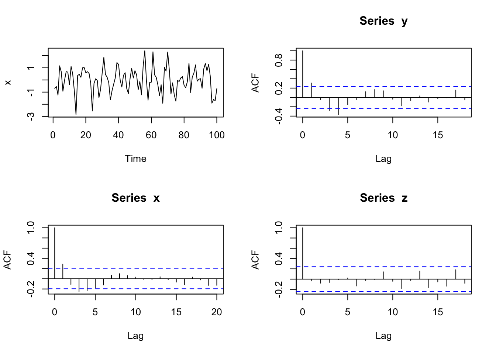
階差次数\(d\)の代替的推定法
パッケージfracdiffにより, Geweke and Porter-Hudak(83), Reisen(94)の代替的な\(d\)の推定を行うことができる. これらは, 時系列データのperidogram (スペクトル密度の推定値) をベースにした方法である.
# library(fracdiff)
# Geweke and Porter-Hudak(83)の方法
(d_GPH <- fdGPH(x))
#> $d
#> [1] -0.7167363
#>
#> $sd.as
#> [1] 0.2935592
#>
#> $sd.reg
#> [1] 0.2232167
# Reisen(94)の方法
(d_Sper <- fdSperio(x))
#> $d
#> [1] -0.6491031
#>
#> $sd.as
#> [1] 0.1334138
#>
#> $sd.reg
#> [1] 0.08329104先のget_fracdiff_ts()を使い\(\{y_t\}\)を生成し,
これが白色ノイズになるかを確認する.
# GPH推定値の使用
y <- get_fracdiff_ts(x, d_GPH$d) # {x_t}より非整数階差系列{y_t}を生成
# ARMAモデルの適合に, パッケージforecastのauto.arima()関数使用
library(forecast)
(y_fit <- auto.arima(y)) # ARモデルをフィット
#> Series: y
#> ARIMA(0,0,3) with zero mean
#>
#> Coefficients:
#> ma1 ma2 ma3
#> 0.8403 0.5521 0.2549
#> s.e. 0.1171 0.1411 0.1297
#>
#> sigma^2 = 0.8098: log likelihood = -90.83
#> AIC=189.66 AICc=190.27 BIC=198.65
# y_resid <- y_fit$res
# par(mfcol = c(1, 2))
# acf(y_resid); pacf(y_resid)
# Box.test(y_resid, lag = 30, type = "Ljung")
tsdiag(y_fit)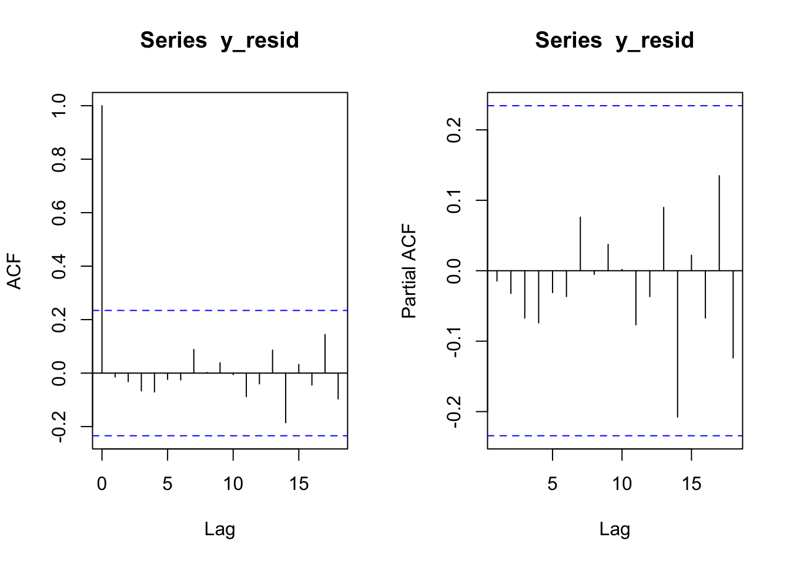
# または
accuracy(y_fit)
#> ME RMSE MAE MPE MAPE MASE
#> Training set 0.1063931 0.8803915 0.7113902 4.33671 171.6947 0.9058205
#> ACF1
#> Training set -0.01454969
checkresiduals(y_fit)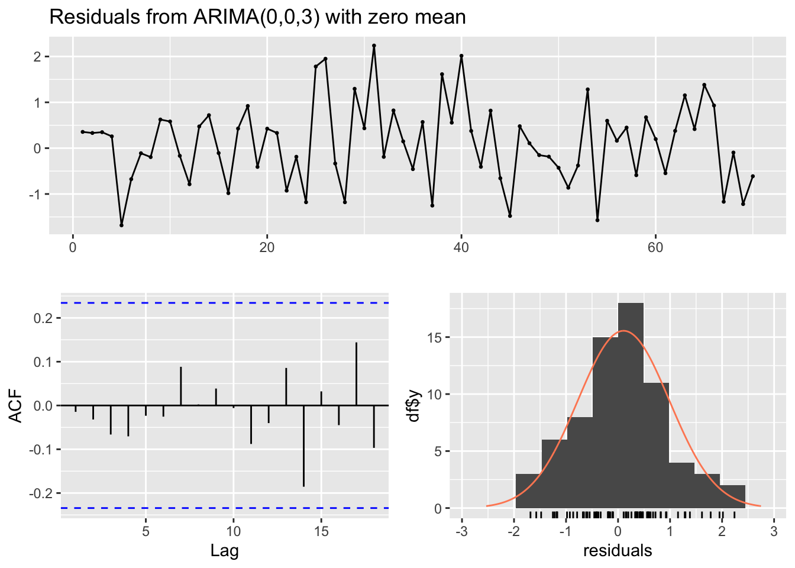
#>
#> Ljung-Box test
#>
#> data: Residuals from ARIMA(0,0,3) with zero mean
#> Q* = 1.6466, df = 7, p-value = 0.9768
#>
#> Model df: 3. Total lags used: 10※ よりフォーマルなモデル同定・推定の手順は, 配布資料参照.
6.4 ARFIMAモデル: データ分析例 (1)
- Tsay, 2.11, pp.119–120
- データ&コードの出所: https://sites.google.com/site/econometricsr/home/rcode
- コードは一部改
# library(fracdiff)
ifl <- file.path(dir_introTS, "d-ibm3dx7008.txt")
da <- read.table(ifl, header = T)
head(da)
#> Date rtn vwretd ewretd sprtrn
#> 1 19700102 0.000686 0.012137 0.033450 0.010211
#> 2 19700105 0.009596 0.006375 0.018947 0.004946
#> 3 19700106 0.000679 -0.007233 -0.005776 -0.006848
#> 4 19700107 0.000678 -0.001272 0.003559 -0.002047
#> 5 19700108 0.002034 0.000564 0.002890 0.000540
#> 6 19700109 -0.001353 -0.002797 -0.002923 -0.003021
ew <- abs(da$vwretd) # daily abs ret's of value-weighted CRSP, 1970--2008
plot(as.ts(ew))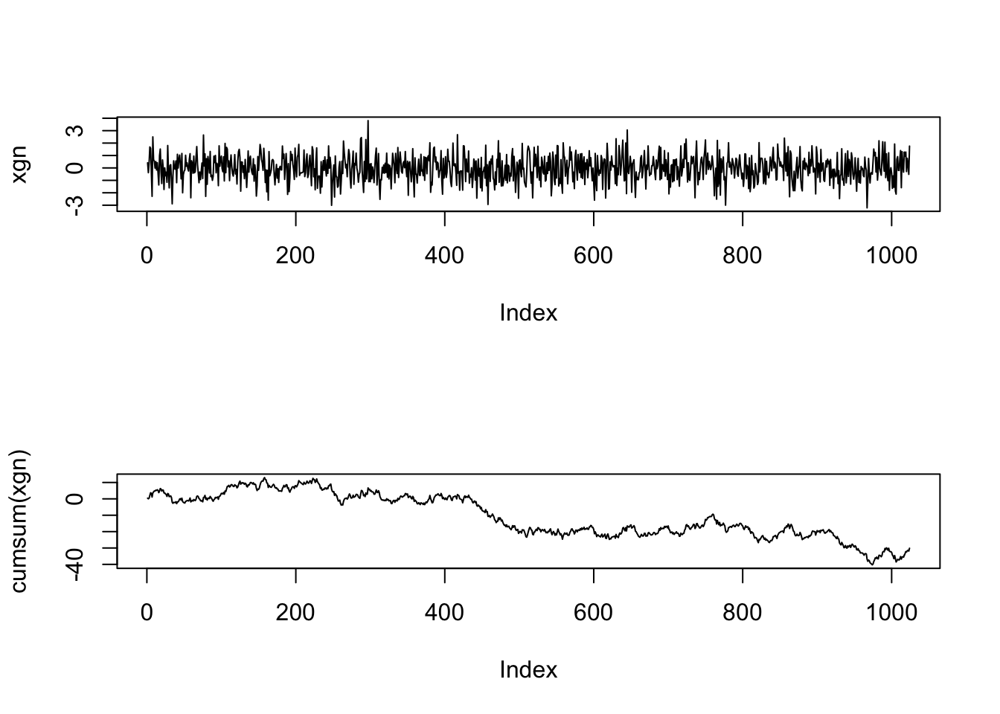
- 次数dの推定
# pure fractionally differenced modelに対して(p=0, q=0)
# Geweke-Porter-Hudak(83) estimate
# (m3 <- fdGPH(da$vwretd)) # d=0.05282
(m3 <- fdGPH(ew))
#> $d
#> [1] 0.372226
#>
#> $sd.as
#> [1] 0.0698385
#>
#> $sd.reg
#> [1] 0.06868857- → \(0<d<0.5\) ∴ 定常, かつ反転可能 (invertible)
# 最尤法 (nar, nmaの指定必要)
# m3.0 <- fracdiff(ew, nar = 0, nma = 0) # デフォルト: nar = 0, nma = 0
# summary(m3.0)
# ARFIMA(1,d,1)の最尤推定
m2 <- fracdiff(ew, nar = 1, nma = 1)
summary(m2)
#>
#> Call:
#> fracdiff(x = ew, nar = 1, nma = 1)
#>
#> Coefficients:
#> Estimate Std. Error z value Pr(>|z|)
#> d 0.490938 0.007997 61.39 <2e-16 ***
#> ar 0.113389 0.005988 18.94 <2e-16 ***
#> ma 0.575895 0.005946 96.85 <2e-16 ***
#> ---
#> Signif. codes: 0 '***' 0.001 '**' 0.01 '*' 0.05 '.' 0.1 ' ' 1
#> sigma[eps] = 0.0065619
#> [d.tol = 0.0001221, M = 100, h = 0.0003742]
#> Log likelihood: 3.551e+04 ==> AIC = -71021.02 [4 deg.freedom]
coef(m2)
#> d ar ma
#> 0.4909382 0.1133893 0.5758949
confint(m2)
#> 2.5 % 97.5 %
#> d 0.4752637 0.5066127
#> ar 0.1016536 0.1251250
#> ma 0.5642407 0.5875491- 注: MA係数の符号が, arima()の符号とは反対
| 2.5 % | 97.5 % | ||
|---|---|---|---|
| d | 0.4909382 | 0.4752637 | 0.5066127 |
| ar | 0.1133893 | 0.1016536 | 0.1251250 |
| ma | 0.5758949 | 0.5642407 | 0.5875491 |
- → dの値, 非定常境界 (d=0.5) に近い
set.seed(101)
m2_sim <- fracdiff.sim(n = 512,
ar = coef(m2)["ar"],
ma = -coef(m2)["ma"],
d = coef(m2)["d"])
plot(as.ts(m2_sim$series))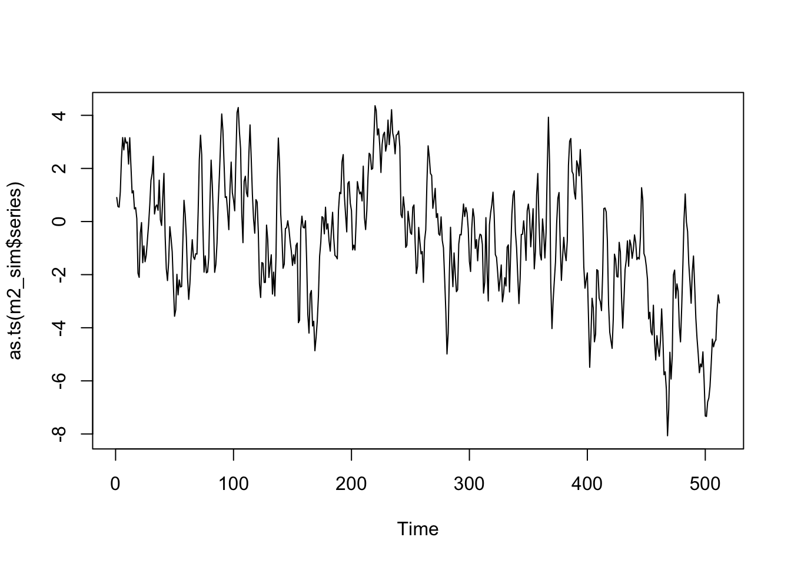
6.5 ARFIMAモデル: データ分析例 (2)
日次ボラティリティ系列には, 長期記憶性があることが多くの実証分析で報告されている (stylized factsの一つ). ここでは, 実現ボラティリティ (RV) の日次系列に対して ARFIMAモデルの推定を試みる.
データセットして, パッケージhighfrequencyに収納されている
SPYRMデータセットを用いる. これはSPY (S&P500 ETF)の高頻度
データより計算された日次のリスク・流動性指標のxtsクラスの
データセットである.
SPYRM
- realized measuresの日次系列
- データ期間: 1/2/2014--12/31/2019このSPYRM内の要素RV5は5分次リターンより計算された実現ボラティリティ
(RV) である. 今回はこれに対してARFIMAモデルを適合する.
# RV (Realized Volatility): 実現ボラティリティ
library(highfrequency)
data(SPYRM) # SPY (SPDR S&P500 ETF)
head(SPYRM) # realized measuresの日次系列
#> Key: <DT>
#> DT RV1 RV5 BPV1 BPV5 medRV1
#> <Date> <num> <num> <num> <num> <num>
#> 1: 2014-01-02 2.680770e-05 2.570763e-05 2.535726e-05 2.374001e-05 2.454129e-05
#> 2: 2014-01-03 1.584448e-05 1.777932e-05 1.549670e-05 1.670686e-05 1.538273e-05
#> 3: 2014-01-06 2.722618e-05 2.562549e-05 2.179050e-05 1.888701e-05 2.239435e-05
#> 4: 2014-01-07 1.083393e-05 9.949228e-06 1.004319e-05 9.745236e-06 1.058696e-05
#> 5: 2014-01-08 3.111775e-05 2.678386e-05 2.578336e-05 2.347057e-05 2.644604e-05
#> 6: 2014-01-09 2.316577e-05 1.870702e-05 1.977435e-05 1.113170e-05 2.039378e-05
#> medRV5 RK1 RK5 RQ1 RQ5 medRQ1
#> <num> <num> <num> <num> <num> <num>
#> 1: 1.933930e-05 2.586084e-05 2.639544e-05 0.05341515 0.05426241 0.04728122
#> 2: 1.626439e-05 1.600491e-05 1.634770e-05 0.03020677 0.03037783 0.02960068
#> 3: 1.638726e-05 3.195125e-05 2.586378e-05 0.06205223 0.05000808 0.04193434
#> 4: 9.317152e-06 9.422459e-06 9.962419e-06 0.02134510 0.01695114 0.02069017
#> 5: 2.323985e-05 1.978144e-05 1.942075e-05 0.08892314 0.05380877 0.08233854
#> 6: 1.011690e-05 1.908528e-05 2.138626e-05 0.04709965 0.04329358 0.04527193
#> medRQ5 CLOSE
#> <num> <num>
#> 1: 0.04728122 182.95
#> 2: 0.02960068 182.80
#> 3: 0.04193434 182.40
#> 4: 0.02069017 183.45
#> 5: 0.08233854 183.53
#> 6: 0.04527193 183.63
# 1/2/2014--12/31/2019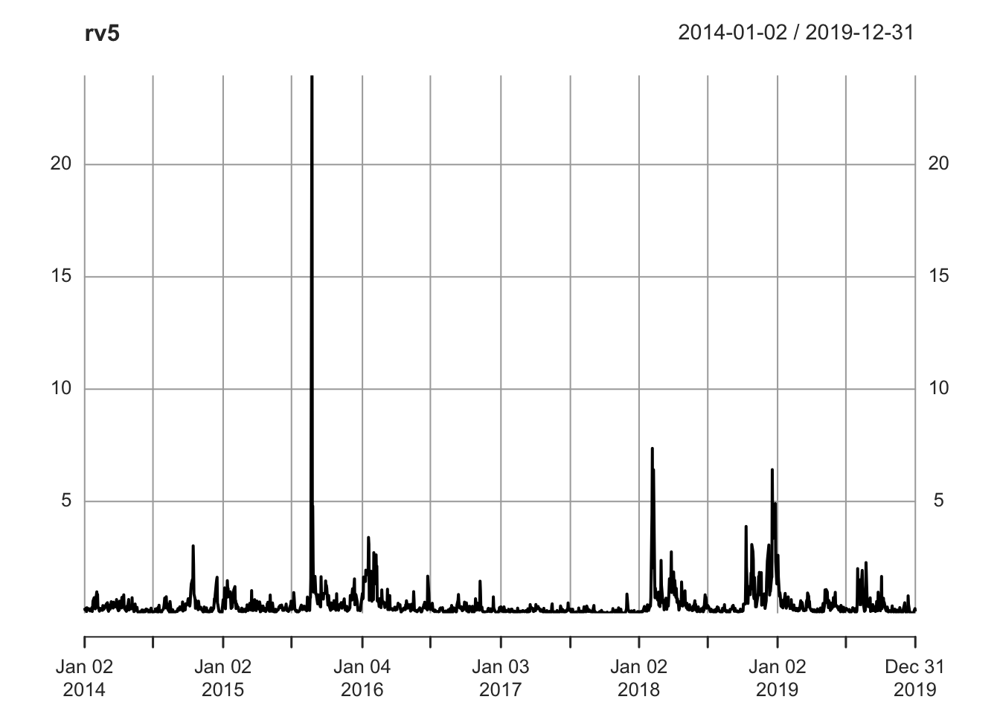
上で解説したように, まず, \(d\)の値を日次RV系列rv5より推定してみる.
library(fracdiff)
# Geweke-Porter-Hudak(83) estimate
(d_gph = fdGPH(rv5))
#> $d
#> [1] 0.2546147
#>
#> $sd.as
#> [1] 0.1212817
#>
#> $sd.reg
#> [1] 0.1234719
# Reisen (94) estimate
(d_sperio = fdSperio(rv5))
#> $d
#> [1] 0.2959239
#>
#> $sd.as
#> [1] 0.04815862
#>
#> $sd.reg
#> [1] 0.06010544# 最尤法 (nar, nmaの指定必要)
(fit_arfima <- fracdiff(rv5, nar = 0, nma = 0))
#>
#> Call:
#> fracdiff(x = rv5, nar = 0, nma = 0)
#>
#> Coefficients:
#> d
#> 0.3452906
#> sigma[eps] = 0.7376825
#> a list with components:
#> [1] "log.likelihood" "n" "msg" "d"
#> [5] "ar" "ma" "covariance.dpq" "fnormMin"
#> [9] "sigma" "stderror.dpq" "correlation.dpq" "h"
#> [13] "d.tol" "M" "hessian.dpq" "length.w"
#> [17] "residuals" "fitted" "call"
# ARFIMA(1,d,1)の最尤推定
fit_arfima2 = fracdiff(rv5, nar = 1, nma = 1)
summary(fit_arfima2)
#>
#> Call:
#> fracdiff(x = rv5, nar = 1, nma = 1)
#>
#> Coefficients:
#> Estimate Std. Error z value Pr(>|z|)
#> d 0.15971 0.01091 14.637 <2e-16 ***
#> ar 0.74835 0.08420 8.888 <2e-16 ***
#> ma 0.56622 0.06213 9.113 <2e-16 ***
#> ---
#> Signif. codes: 0 '***' 0.001 '**' 0.01 '*' 0.05 '.' 0.1 ' ' 1
#> sigma[eps] = 0.7369145
#> [d.tol = 0.0001221, M = 100, h = 1.755e-05]
#> Log likelihood: -1665 ==> AIC = 3337.888 [4 deg.freedom]最適なARFIMAモデルの選択および推定
パッケージforecastの関数arfima()は,
上記fracdiffの関数fracdiff()とforecastの
auto.arima()を組合せて,
ARFIMAモデルの自動選択&パラメータ推定を実行することができる.
モデル選択基準は, auto.arima()の引数icの選択肢
(“aicc”, “aic”, “bic”) から選ぶことができる (デフォルトは”aicc”).
- RV (分散表示)
# RV
fit_rv <- forecast::arfima(coredata(rv5))
summary(fit_rv)
#>
#> Call:
#> forecast::arfima(y = coredata(rv5))
#>
#> Coefficients:
#> Estimate Std. Error z value Pr(>|z|)
#> d 0.266671 0.009558 27.900 < 2e-16 ***
#> ma.ma1 -0.063041 0.027422 -2.299 0.02151 *
#> ma.ma2 -0.084791 0.026271 -3.228 0.00125 **
#> ma.ma3 -0.076951 0.026091 -2.949 0.00318 **
#> ---
#> Signif. codes: 0 '***' 0.001 '**' 0.01 '*' 0.05 '.' 0.1 ' ' 1
#> sigma[eps] = 0.7364955
#> [d.tol = 0.0001221, M = 100, h = 1.755e-05]
#> Log likelihood: -1664 ==> AIC = 3338.552 [5 deg.freedom]
accuracy(fit_rv)
#> ME RMSE MAE MPE MAPE MASE
#> Training set -0.0007177275 0.7356355 0.2306756 -69.83532 87.93373 0.9842525
#> ACF1
#> Training set 0.001397451- RV (標準偏差表示)

fit_sqrtrv <- forecast::arfima(coredata(sqrt(rv5)))
summary(fit_sqrtrv)
#>
#> Call:
#> forecast::arfima(y = coredata(sqrt(rv5)))
#>
#> Coefficients:
#> Estimate Std. Error z value Pr(>|z|)
#> d 0.3353183 0.0009209 364.114 < 2e-16 ***
#> ar.ar1 -0.2347200 0.0508590 -4.615 3.93e-06 ***
#> ar.ar2 0.6560776 0.0584624 11.222 < 2e-16 ***
#> ma.ma1 -0.4738122 0.0668987 -7.083 1.42e-12 ***
#> ma.ma2 0.4597059 0.0603449 7.618 2.58e-14 ***
#> ---
#> Signif. codes: 0 '***' 0.001 '**' 0.01 '*' 0.05 '.' 0.1 ' ' 1
#> sigma[eps] = 0.2161109
#> [d.tol = 0.0001221, M = 100, h = 1.787e-06]
#> Log likelihood: 168.6 ==> AIC = -325.1244 [6 deg.freedom]
accuracy(fit_sqrtrv)
#> ME RMSE MAE MPE MAPE MASE
#> Training set -0.0004485554 0.2160546 0.136351 -9.742148 25.83164 0.9239617
#> ACF1
#> Training set 0.001251137- 対数RV系列
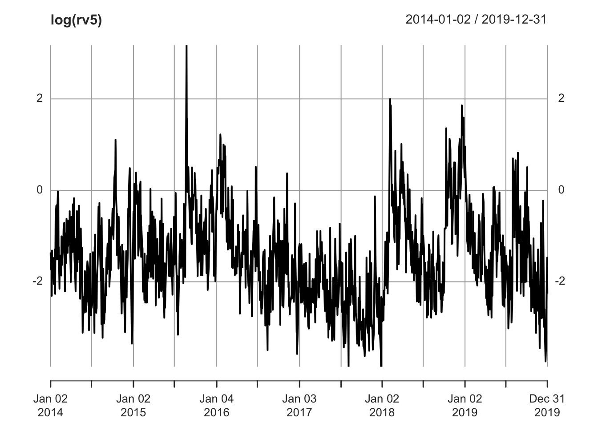
fit_lnrv <- forecast::arfima(coredata(log(rv5)))
summary(fit_lnrv)
#>
#> Call:
#> forecast::arfima(y = coredata(log(rv5)))
#>
#> Coefficients:
#> Estimate Std. Error z value Pr(>|z|)
#> d 0.422179 0.008266 51.074 < 2e-16 ***
#> ar.ar1 0.674953 0.122455 5.512 3.55e-08 ***
#> ma.ma1 0.535849 0.103727 5.166 2.39e-07 ***
#> ---
#> Signif. codes: 0 '***' 0.001 '**' 0.01 '*' 0.05 '.' 0.1 ' ' 1
#> sigma[eps] = 0.5985781
#> [d.tol = 0.0001221, M = 100, h = 1.429e-05]
#> Log likelihood: -1355 ==> AIC = 2717.863 [4 deg.freedom]
accuracy(fit_rv)
#> ME RMSE MAE MPE MAPE MASE
#> Training set -0.0007177275 0.7356355 0.2306756 -69.83532 87.93373 0.9842525
#> ACF1
#> Training set 0.001397451注) fracdiff()の係数は,
\(\phi(z) = 1 - \phi_1 z - \cdots - \phi_p z^p\),
\(\theta(z) = 1 - \theta_1 z - \cdots - \theta_q z^q\)
であることに注意しよう.